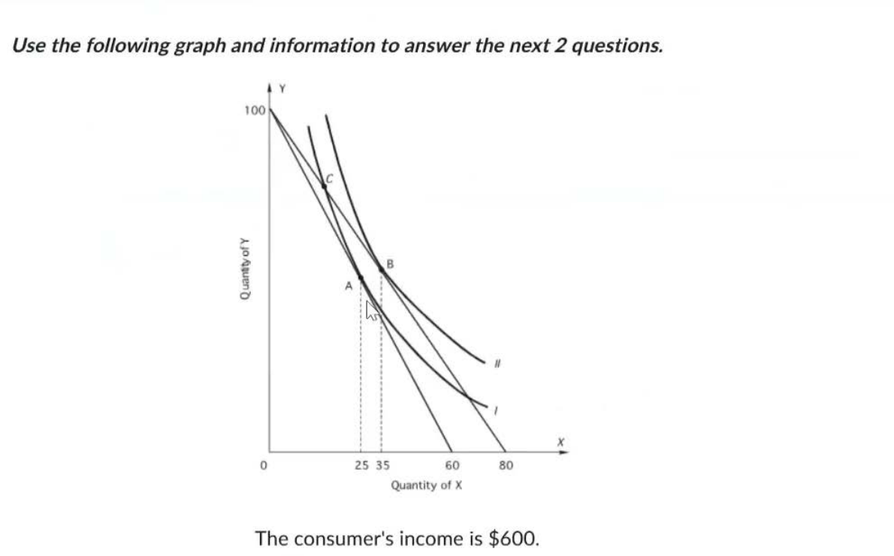
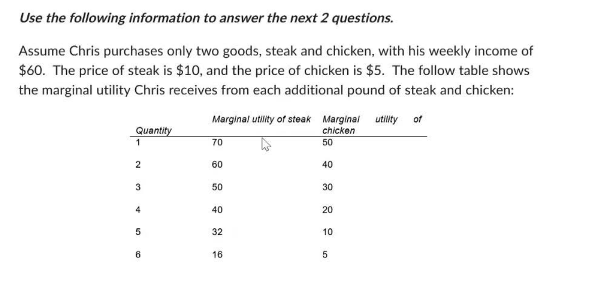
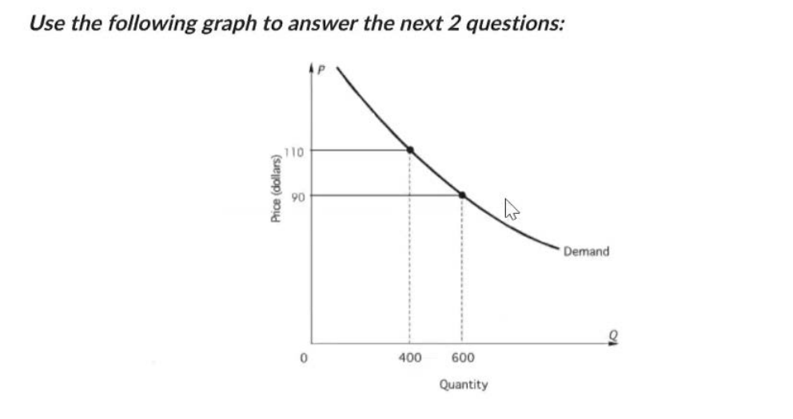
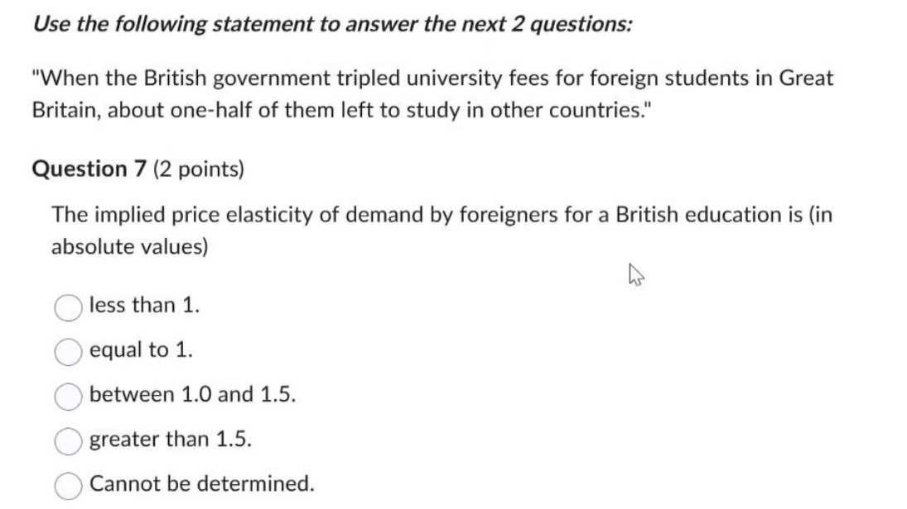
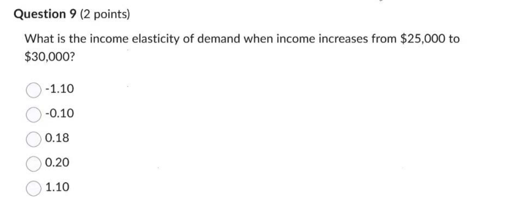
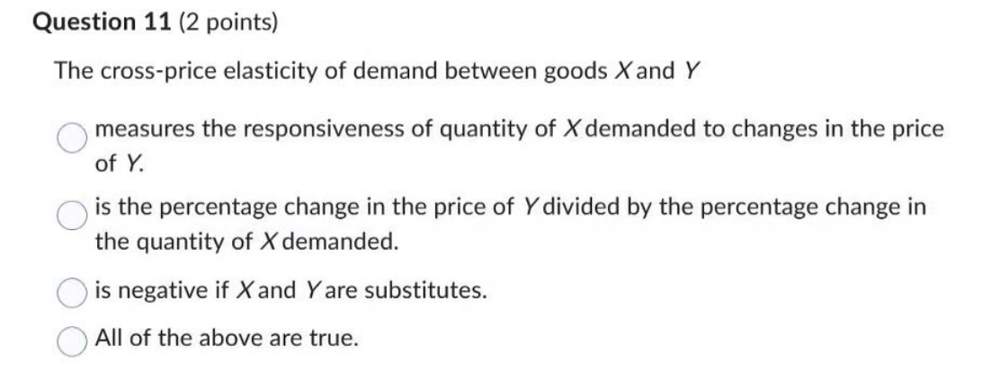
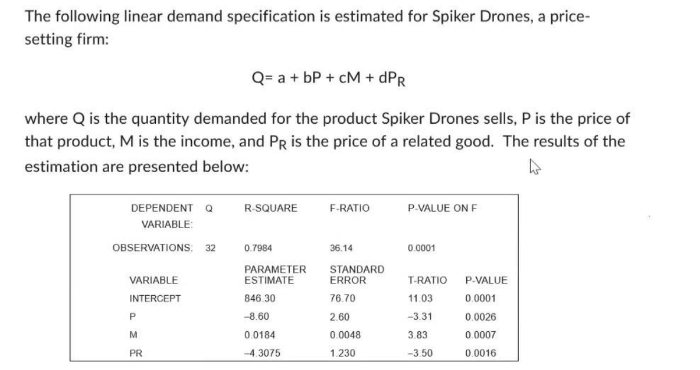

المعطيات: - دخل المستهلك = $600 - من الرسم البياني: عند X=0، Y=100 (تقاطع مع محور Y) - عند Y=0، X=80 (تقاطع مع محور X)
الخيارات: $0.25 | $4 | $6 | $8 | None
الحل: من معادلة الميزانية: Income = Px·X + Py·Y
عند نقطة تقاطع محور Y (X = 0, Y = 100): $$600 = P_Y \times 100$$ $$P_Y = \frac{600}{100} = \$6$$
الإجابة: $6 ✓
الشرح بالمصري: بنروح للنقطة اللي المستهلك بيشتري فيها Y بس من غير X. لو Y = 100 والفلوس = 600$: سعر Y = 600 ÷ 100 = $6
الخيارات: 25 | 30 | 35 | 50 | None
الحل: من الرسم البياني، نقطة التوازن (tangency point) بين خط الميزانية ومنحنى السواء عند X ≈ 35.
نتحقق: عند Px = $7.50, Py = $6: - لو X = 35: الفاضل من الميزانية = 600 - (7.50 × 35) = 600 - 262.5 = $337.5 - Y = 337.5 ÷ 6 = 56.25 وحدة
من الرسم، النقطة (35, ~56) هي نقطة التماس مع منحنى السواء.
الإجابة: 35 units ✓
الشرح بالمصري: نقطة التوازن هي اللي منحنى السواء بيمس فيها خط الميزانية. من الرسم، النقطة دي عند X = 35 وحدة تقريباً.

المعطيات: - دخل كريس الأسبوعي = $60 - سعر الستيك = $10 - سعر الفراخ = $5
جدول المنفعة الحدية:
| الكمية | MU Steak | MU Chicken | MU/P Steak (/10) | MU/P Chicken (/5) |
|---|---|---|---|---|
| 1 | 70 | 50 | 7 | 10 |
| 2 | 60 | 40 | 6 | 8 |
| 3 | 50 | 30 | 5 | 6 |
| 4 | 40 | 20 | 4 | 4 |
| 5 | 32 | 10 | 3.2 | 2 |
| 6 | 16 | 5 | 1.6 | 1 |
الخيارات: 2S,5C | 3S,2C | 4S,4C | 5S,2C | None
الحل: نشتري بترتيب أعلى MU/P:
| الخطوة | السلعة | MU/P | التكلفة التراكمية |
|---|---|---|---|
| 1 | Chicken 1 | 10 | $5 |
| 2 | Chicken 2 | 8 | $10 |
| 3 | Steak 1 | 7 | $20 |
| 4 | Chicken 3 | 6 | $25 |
| 5 | Steak 2 | 6 | $35 |
| 6 | Steak 3 | 5 | $45 |
| 7 | Chicken 4 | 4 | $50 |
| 8 | Steak 4 | 4 | $60 ✓ |
النتيجة:
4 Steak + 4 Chicken = $40 + $20 = $60 ✓
الشرح بالمصري:
بنشتري من اللي يدينا أعلى منفعة لكل جنيه. نفضل نختار الأعلى لحد ما الفلوس تخلص.
الخيارات: 4S,4C | 5S,3C | 5S,4C | 6S,2C | None
الحل مع السعر الجديد:
| الكمية | MU Steak | MU/P (/8) |
|---|---|---|
| 1 | 70 | 8.75 |
| 2 | 60 | 7.5 |
| 3 | 50 | 6.25 |
| 4 | 40 | 5 |
| 5 | 32 | 4 |
ترتيب الشراء الجديد: 1. Chicken 1 (10) → $5 2. Steak 1 (8.75) → $13 3. Chicken 2 (8) → $18 4. Steak 2 (7.5) → $26 5. Steak 3 (6.25) → $34 6. Chicken 3 (6) → $39 7. Steak 4 (5) → $47 8. Chicken 4 (4) & Steak 5 (4) → $52 + $8 = $60 ✓
النتيجة:
5 Steak + 4 Chicken = $40 + $20 = $60 ✓
الشرح بالمصري:
لما الستيك رخص، بقى أحسن نشتري منه أكتر.

من الرسم البياني: - عند P = $110، Q = 400 - عند P = $90، Q = 600
الخيارات المعروضة: 0.4 | 0.5 | 1.0 | 1.5
⚠️ ملاحظة: الخيار 2 ناقص وهو الإجابة الصحيحة!
الحل: $$E_d = \frac{\Delta Q / \bar{Q}}{\Delta P / \bar{P}}$$
$$E_d = \frac{200/500}{20/100} = \frac{0.4}{0.2} = 2$$
الإجابة: 2 (الخيار الناقص!) ✓
الشرح بالمصري: لما السعر اتغير 20%، الكمية اتغيرت 40%. المرونة = 40% ÷ 20% = 2 يعني الطلب مرن جداً - الناس حساسة للسعر.
الخيارات: greater than one; inelastic | positive; elastic | negative; inelastic | negative; elastic | None
الحل: - P = $90, Q = 600 → TR = $54,000 - P = $100, Q = 500 → TR = $50,000
$$MR = \frac{\Delta TR}{\Delta Q} = \frac{54,000 - 50,000}{600 - 500} = \frac{4,000}{100} = +40$$
MR موجب → TR بتزيد لما ننتج أكتر (أو تقل لما السعر يزيد) لما السعر زاد وTR قلت → الطلب مرن (Elastic)
الإجابة: positive; elastic ✓
الشرح بالمصري: - MR موجب = كل وحدة زيادة بتزود الإيراد - السعر زاد والإيراد قل = الطلب مرن (الناس هربت)

المعطيات: - الحكومة ضاعفت الرسوم 3 مرات (tripled) - نص الطلاب سابوا (half left)
الخيارات: less than 1 | equal to 1 | between 1 and 1.5 | greater than 1.5 | Cannot be determined
الحل: باستخدام Arc Elasticity: - السعر من 1 لـ 3 (زيادة 200%) - الكمية من 1 لـ 0.5 (نقص 50%)
$$E_d = \frac{(0.5-1)/0.75}{(3-1)/2} = \frac{-0.667}{1} = 0.667$$
$|E_d| = 0.67 < 1$
الإجابة: less than 1 ✓
الشرح بالمصري: السعر اتضاعف 3 مرات بس نص الطلبة بس مشيوا. يعني الطلب مش حساس قوي للسعر = غير مرن.
الخيارات: decrease | not change | increase | cannot determine
الحل: في الطلب غير المرن (E < 1): - لما السعر يزيد، الإيراد يزيد - السعر × 3، الطلاب × 0.5 - الإيراد الجديد = 3 × 0.5 = 1.5 × الإيراد القديم
الإجابة: increase ✓
الشرح بالمصري: الطلب غير مرن يعني لما السعر يغلى، الإيراد يزيد. ضربنا السعر × 3 وقسمنا الطلبة ÷ 2 = الإيراد زاد 50%!

من الرسم البياني: - عند M = $25,000، Q = 900 - عند M = $30,000، Q = 1,100
الخيارات: -1.10 | -0.10 | 0.18 | 0.20 | 1.10
الحل: $$E_M = \frac{\Delta Q / \bar{Q}}{\Delta M / \bar{M}}$$
$$E_M = \frac{200/1000}{5,000/27,500} = \frac{0.2}{0.182} = 1.10$$
الإجابة: 1.10 ✓
الخيارات: Normal good | Inferior good | Giffen good | No close substitutes
الحل: - مرونة الدخل = +1.10 > 0 - لما الدخل زاد، الطلب زاد - السلعة عادية (Normal Good)
الإجابة: It is a normal good ✓
الشرح بالمصري: لما الناس بتاخد فلوس أكتر، بتشتري من السلعة دي أكتر = سلعة عادية. لو كانت سلعة رديئة، كان الناس هتبطل تشتريها لما دخلها يزيد.

السؤال: المرونة السعرية التقاطعية بين السلعتين X و Y...
الخيارات: - measures the responsiveness of quantity of X demanded to changes in the price of Y - is the percentage change in the price of Y divided by the percentage change in the quantity of X demanded - is negative if X and Y are substitutes - All of the above are true
الحل:
المرونة السعرية التقاطعية تُعرَّف كالتالي:
$$E_{XY} = \frac{\% \Delta Q_X}{\% \Delta P_Y}$$
الإجابة: measures the responsiveness of quantity of X demanded to changes in the price of Y ✓
الشرح بالمصري: المرونة التقاطعية بتقيس: لو سعر Y اتغير، الكمية اللي هتشتريها من X هتتأثر قد إيه؟ - لو البضاعتين بدائل (زي بيبسي وكوكاكولا): سعر واحدة يغلى → الناس تشتري التانية = مرونة موجبة - لو متكاملات (زي عربية وبنزين): سعر واحدة يغلى → الناس تشتري التانية أقل = مرونة سالبة

معادلة الطلب: $$Q = a + bP + cM + dP_R$$
نتائج الانحدار (Regression Results) لشركة Spiker Drones:
| المتغير | Parameter Estimate | Standard Error | T-Ratio | P-Value |
|---|---|---|---|---|
| INTERCEPT | 846.30 | 76.70 | 11.03 | 0.0001 |
| P (السعر) | -8.60 | 2.60 | -3.31 | 0.0026 |
| M (الدخل) | 0.0184 | 0.0048 | 3.83 | 0.0007 |
| PR (سعر المنافس) | -4.3075 | 1.230 | -3.50 | 0.0016 |
معادلة الطلب المقدرة: $$Q = 846.30 - 8.60P + 0.0184M - 4.3075P_R$$
الخيارات: - this good is a normal good - this good is an inferior good - the related good is a substitute - the coefficient on the Price variable is inconsistent with the Law of Demand
الحل:
تحليل المعاملات:
| المعامل | القيمة | التفسير |
|---|---|---|
| معامل P | -8.60 (سالب) | ✅ متسق مع قانون الطلب (السعر ↑ = الكمية ↓) |
| معامل M | +0.0184 (موجب) | ✅ سلعة عادية (الدخل ↑ = الطلب ↑) |
| معامل PR | -4.3075 (سالب) | سلعة متكاملة وليست بديلة |
الإجابة: this good is a normal good ✓
الشرح بالمصري: - معامل الدخل M = +0.0184 (موجب) → يعني لما دخل الناس يزيد، بيشتروا أكتر = سلعة عادية - معامل السعر = -8.60 (سالب) → طبيعي، ده قانون الطلب - معامل سعر المنافس = -4.3075 (سالب) → السلعتين متكاملين مش بدائل
المعطيات: - M (الدخل) = $10,000 - PR (سعر المنافس) = $40 - P (السعر) = $30
الحل:
$$Q = 846.30 - 8.60(30) + 0.0184(10,000) - 4.3075(40)$$
$$Q = 846.30 - 258 + 184 - 172.30$$
$$Q = 846.30 - 246.30 = 600$$
الإجابة: 600 units ✓
الشرح بالمصري: نعوض في المعادلة: - 846.30 (الثابت) - ناقص 8.60 × 30 = 258 - زائد 0.0184 × 10,000 = 184 - ناقص 4.3075 × 40 = 172.30
المجموع = 600 وحدة
المعطيات: P = $30, Q = 600
الخيارات: 0.43 | 0.86 | 1.00 | 1.43 | None
الحل:
صيغة المرونة النقطية: $$E_P = \frac{\partial Q}{\partial P} \times \frac{P}{Q}$$
من المعادلة: $\frac{\partial Q}{\partial P} = -8.60$
$$E_P = -8.60 \times \frac{30}{600} = -8.60 \times 0.05 = -0.43$$
القيمة المطلقة: $|E_P| = 0.43$
الإجابة: 0.43 ✓
الشرح بالمصري: المرونة = معامل السعر × (السعر ÷ الكمية) = -8.60 × (30 ÷ 600) = -8.60 × 0.05 = -0.43
بالقيمة المطلقة = 0.43 (أقل من 1 = طلب غير مرن)
المعطيات: M = $10,000, Q = 600
الخيارات: -1.62 | -0.87 | 0.21 | 0.31 | None
الحل:
صيغة مرونة الدخل: $$E_M = \frac{\partial Q}{\partial M} \times \frac{M}{Q}$$
من المعادلة: $\frac{\partial Q}{\partial M} = 0.0184$
$$E_M = 0.0184 \times \frac{10,000}{600} = 0.0184 \times 16.67 = 0.307 \approx 0.31$$
الإجابة: 0.31 ✓
الشرح بالمصري: مرونة الدخل = معامل الدخل × (الدخل ÷ الكمية) = 0.0184 × (10,000 ÷ 600) = 0.0184 × 16.67 = 0.31
لأن المرونة موجبة = سلعة عادية ✓
| السؤال | الموضوع | الإجابة |
|---|---|---|
| 1 | سعر السلعة Y | $6 |
| 2 | وحدات X عند $7.50 | 35 units |
| 3 | تعظيم المنفعة (Steak/Chicken) | 4 steak, 4 chicken |
| 4 | التعظيم بعد تخفيض السعر | 5 steak, 4 chicken |
| 5 | المرونة السعرية $90→$110 | 2 ⚠️ |
| 6 | MR والطلب $90→$100 | positive; elastic |
| 7 | مرونة التعليم البريطاني | less than 1 |
| 8 | إيرادات الجامعات | increase |
| 9 | مرونة الدخل | 1.10 |
| 10 | نوع السلعة | Normal good |
| 11 | تعريف المرونة التقاطعية | responsiveness of Qx to Py |
| 12 | تحليل معاملات الانحدار | Normal good |
| 13 | الكمية المتوقعة | 600 units |
| 14 | المرونة السعرية | 0.43 |
| 15 | مرونة الدخل | 0.31 |